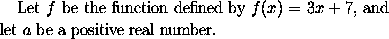
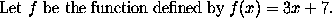
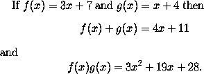
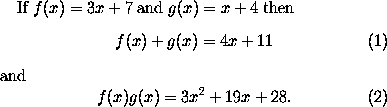

In order to obtain a mathematical formula using LaTeX, one must
enter mathematics mode before the formula and leave it
afterwards. Mathematical formulae can occur either embedded in text
or else displayed between lines of text. When a formula occurs within
the text of a paragraph one should place a $ sign before and
after the formula, in order to enter and leave mathematics mode.
Thus to obtain a sentence like
one should type
In particular, note that even mathematical expressions consisting of a single character, like f and a in the example above, are placed withinLet $f$ be the function defined by $f(x) = 3x + 7$, and let $a$ be a positive real number.
$ signs. This is to ensure that they are set
in italic type, as is customary in mathematical typesetting.
LaTeX also allows you to use \( and \) to mark
the beginning and the end respectively of a mathematical formula
embedded in text. Thus
may be produced by typing
However this use ofLet \( f \) be the function defined by \( f(x) = 3x + 7 \).
\( ... \) is only
permitted in LaTeX: other dialects of TeX such as
Plain TeX and AmSTeX use $ ... $.
In order to obtain an mathematical formula or equation which
is displayed on a line by itself, one places \[
before and
\] after the formula. Thus to obtain
one would type
(Here the characterIf $f(x) = 3x + 7$ and $g(x) = x + 4$ then \[ f(x) + g(x) = 4x + 11 \] and \[ f(x)g(x) = 3x^2 + 19x +28. \]
^ is used to obtain a superscript.)
LaTeX provides facilities for the automatic numbering of
displayed equations. If you want an numbered equation then you
use \begin{equation} and \end{equation} instead
of using \[ and \] . Thus
If $f(x) = 3x + 7$ and $g(x) = x + 4$ then
\begin{equation}
f(x) + g(x) = 4x + 11
\end{equation}
and
\begin{equation}
f(x)g(x) = 3x^2 + 19x +28.
\end{equation}
produces
